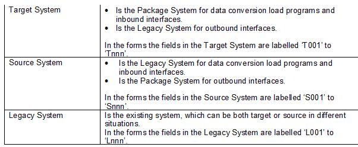
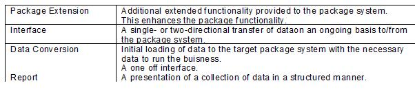

Introduction
The details required will depend upon what is to be subsequently developed from each particular "Development Cost
Justification" i.e.:
-
Data conversion (extract and load)
-
Interface (inbound and outbound)
-
Package extension
-
Report
-
Security profiles
General Guidance
Purpose
To provide the details at an adequate level (i.e. at a lower level than the "Future Fit/Gap Analysis" supplies) to
allow the creation of the "Justification" (incl. functional information and field/screen level technical detail) for
each of the development requirements and security profiles.
Impact of Not Using This Technique Paper
The level of detail will not be enough to create the technical specifications, that enable development of the areas
above, since the detail required is not supplied by the "Future Fit/Gap Analysis" Work Product.
If an attempt is made to technically specify or develop solutions without accurate detail, then there will be an
overhead caused by the necessity to correct or adjust miss-understandings or assumptions.
This will obviously lead to a delay and increase the development costs within the project.
The levels of detail will not be enough to estimate the different development requirements, which in turn makes it
difficult to achieve a justification and subsequently a sign-off for any developments required. The security profiles
can only be set up to a granularity corresponding to transaction detail level, not to field or screen level, as the
details for this level have not been identified or specified.
Reasons for Not Needing This Technique Paper
The only acceptable situation where the output of this Technique Paper is not needed is where the project undertaken
does not require any development and where there are no authorization checks to be performed.
Notation


Development Approach
Input to this Technique:
-
Approved "Business Process Flows" (level 1-4) from the "Future Fit/Gap Analysis" Work Product covering:
- Data Conversion Requirements for master and transaction data – for both extracting and loading.
- Interfaces Requirements - for both inbound and outbound interfaces.
- Additions to or enhancements of the package solution (package extensions).
- Enhancements to, or creation of reports.
- Authorization requirements (security profiles).
- Approved Business Transaction Scripts ("Future Process Design Documentation") and "Solution Design
Matrix".
Output from this Technique:
-
Relevant "Justifications" for:
- Data Conversion requirements (extract & load).
- Interfaces requirements (inbound & outbound, extract & load).
- Package Extension requirements.
- Report requirements.
- Security Profile requirements.
-
Relevant "Detailed Future Documentation" for:
- Data Conversion requirements (extract & load).
- Interfaces requirements (inbound & outbound, extract & load).
- Report requirements.
- Security Profile requirements.
Development Activities
The following tasks are performed in support of developing the cost justifications
For Data Conversion - Load:
-
Complete the "Justification" form for Data Conversion for each data object (master data and transaction data
object).
-
Complete the Detailed Target Package Documentation. Obtain approval for development.
For Interfaces - Inbound & Load:
-
Complete the "Justification" form for Interfaces for each identified interface requirement.
-
Complete the Detailed Target Package Documentation
-
Obtain approval for development.
For Interfaces - Outbound & Load:
-
Complete the "Justification" form for Interfaces for each identified interface requirement.
-
Complete the "Detailed Legacy Documentation" form.
-
Obtain approval for development.
For Package Extensions:
-
Complete the "Justification" form package extensions.
-
Obtain approval for development
The level of approval may be higher for package extensions, than for the other development requirements.
For Reports:
-
Complete the "Justification" form for reports.
-
Complete the Detailed Source Package Documentation, i.e. "Detailed Source SAP Documentation" form for SAP.
-
Obtain approval for development.
The level of approval may be higher for enhancements to existing reports, than for the development of new reports.
For Security Profiles (Authorizations):
-
Complete the "Justification" form for authorizations.
-
Complete the Detailed Authorization Documentation.
-
Prepare the Master List of To-Be transactions showing job roles per transaction, including information on
qualifiers or job role constraints, e.g. sign-off limit of purchase orders.
-
As the transactions are assigned a security profile, check off the transactions - job role on the list. This will
serve as a check that all the designed To-Be worksteps are actually assigned a job roles (or security profile).
-
Obtain approval for development.
Forward the "Justifications" to "Development Requirements" for prioritization.
Forward the Detailed To-Be Documentation for the data conversions and interfaces to "Data Mapping Legacy to Package" as
the To-Be specifications.
Forward the Detailed To-Be Documentation for the package extensions to "Package Extension Specifications" and reports
to "Report Specifications" giving the required level of technical details.
Forward the Detailed To-Be Documentation for security profile to "Authorization Specification & Unit Test" giving
the required level of technical details.
Validation and Verification
Each "Detailed To-Be Justification" will be validated and approved by the technical project manager/Application
Development Consultant as applicable, this may require a ‘walk-through’ with the person responsible for preparing the
appropriate "Technical Specification".
Advice and Guidance
For Reports and Interfaces any changes in the configuration of the Package system must be notified to the developers of
both the Legacy and Package system programs. Minor configuration changes can have major impacts on the programs
in either system.
There may be tools available to assist in the preparation of the Detailed To-Be Documentation, for example where screen
/ field information is required, so this is worth checking with your technical project team.
Efforts spent on ensuring the completeness and clarity in this area will result in a reduced time scale for development
and will diminish the ‘interruption’ of non-technical project team members to attain explanation in the later stages of
the project.
Each "Justification" form has been given a unique reference number, sequential within the development area. This number
reference number belongs to the specific development requirement, and should never be changed, once given.
It is proposed that the unique reference numbering should follow the following format:
-
Data Conversion - DCnnn - where nnn starts at 001 and is incremented by 001 for each new data conversion.
-
Interface (whether inbound or outbound) - IFnnn - where nnn starts at 001 and is incremented by 001 for each new
interface, inbound and outbound interfaces should be numbered separately.
-
Reports and Package extensions - XXnnn where XX describes the functional area that this applies to.
-
For each new report or package extension. If there is not any suitable prefix for the functional area then ‘RE’
should be used for reports and ‘PE’ for package extensions.
-
Authorizations - Aunnn where nnn starts at 001 and is incremented by 001 for each new authorizations.
Once a unique reference number has been allocated then the details must also be added to the "Development Requirement
and Approval" form contained in the "Development Requirements" Work Product.
|